Oferta válida apenas agora
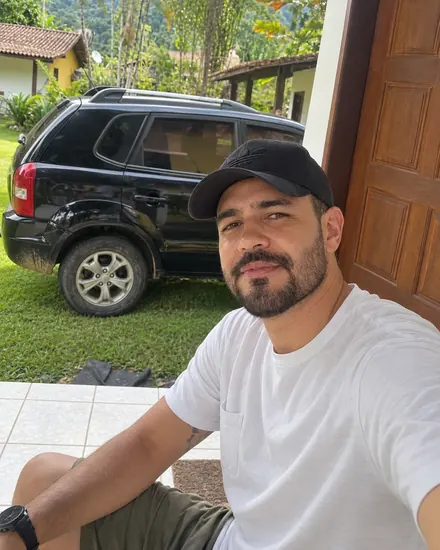
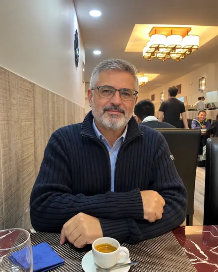
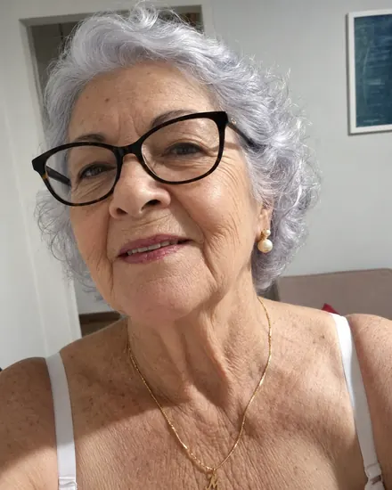
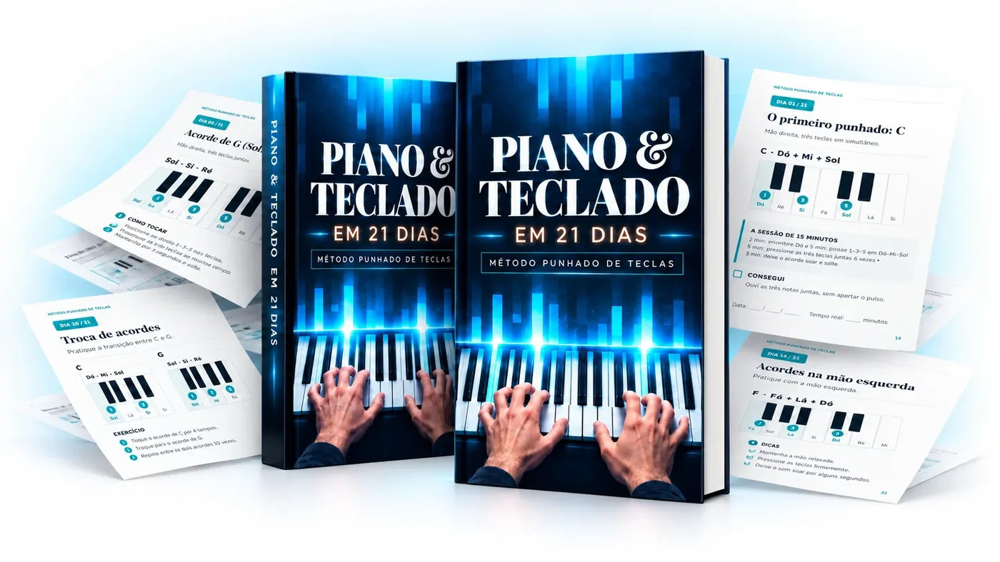
Conhece a cena. Senta-se ao teclado, abre um vídeo, e a primeira coisa que lhe mandam decorar é o nome das notas. Depois vem a pauta. Depois a posição certa dos dedos. Passam três semanas e ainda não saiu uma música. O teclado volta para o canto.
A culpa nunca foi sua. Foi da ordem.
O Método Punhado de Teclas vira isso ao contrário. Em vez de uma nota de cada vez, a sua mão agarra logo o punhado de teclas que forma um acorde. Três dedos, um gesto, e já soa a música.
Aprende quatro punhados. Só quatro. Com eles toca centenas de músicas, porque muitas das que conhece andam à volta desses mesmos quatro acordes.
O ritmo, a mão esquerda e a teoria vêm depois. Quando já há música debaixo dos dedos para lhes dar sentido.
Dia 1: sai som.
Dia 21: sai uma música inteira, com as duas mãos, sem folha à frente.
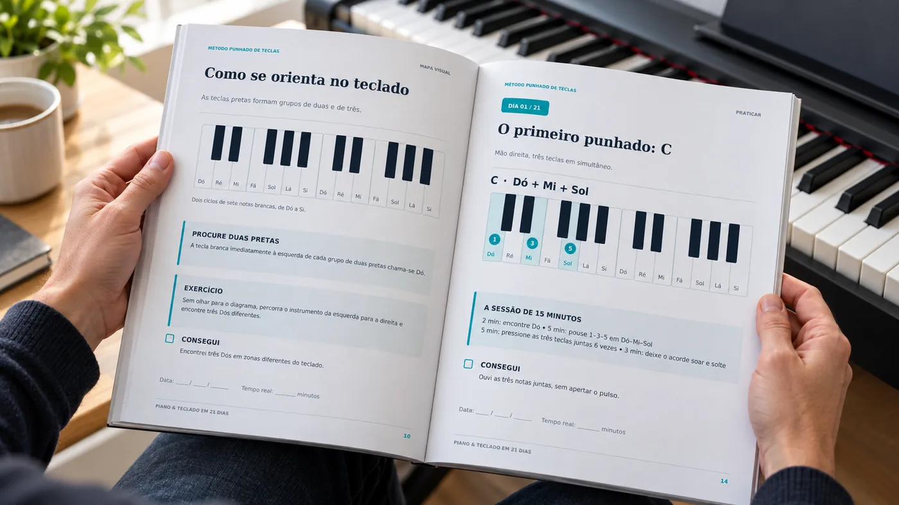
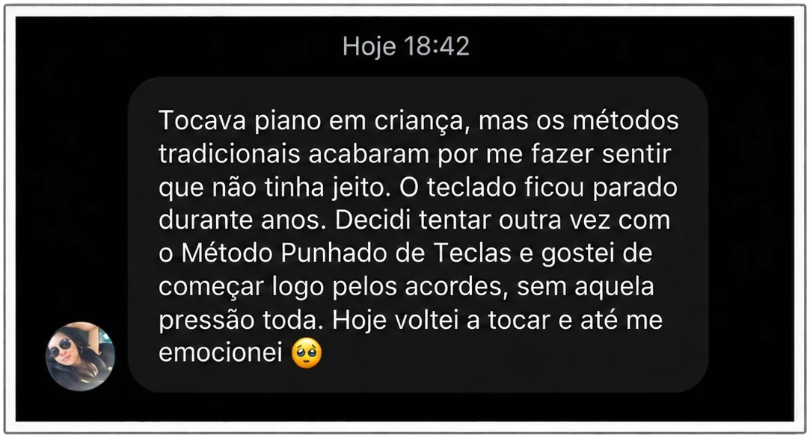
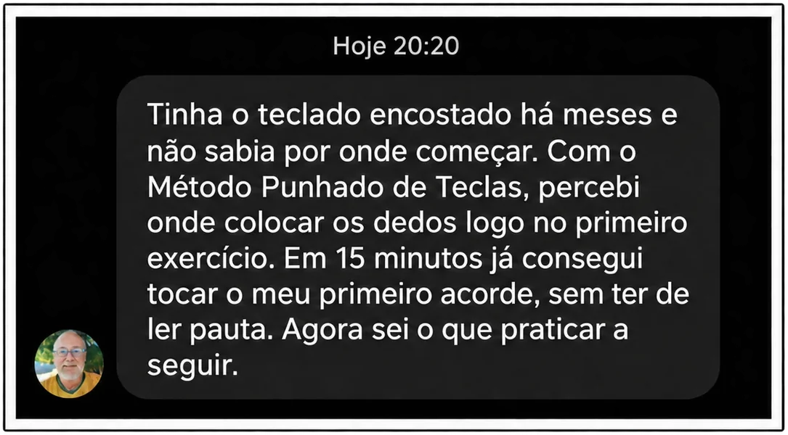
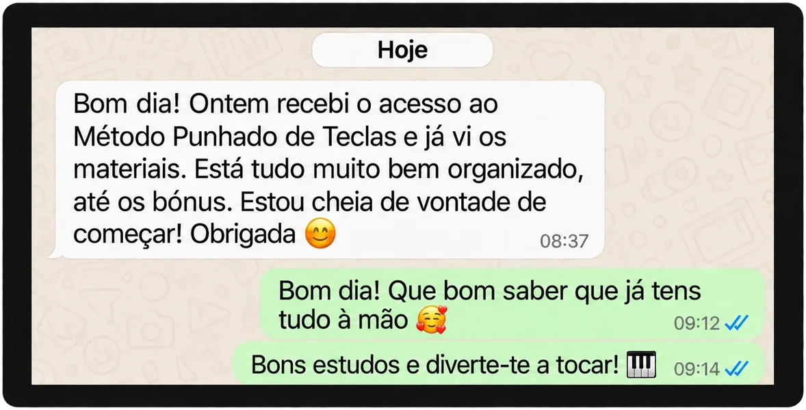
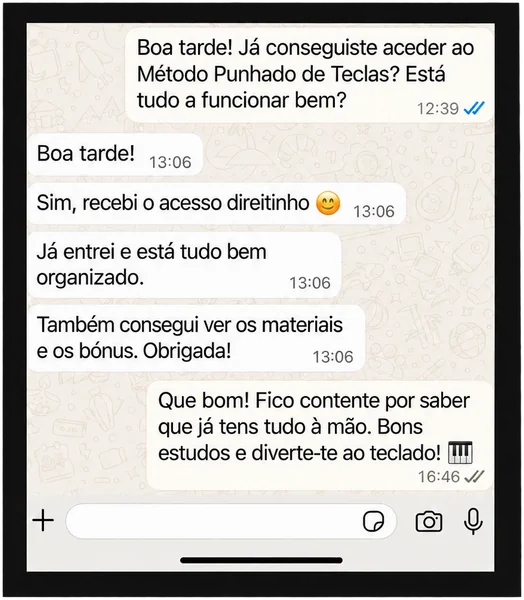
Fotografia de quem assina o material, ao teclado.
Ao comprar hoje
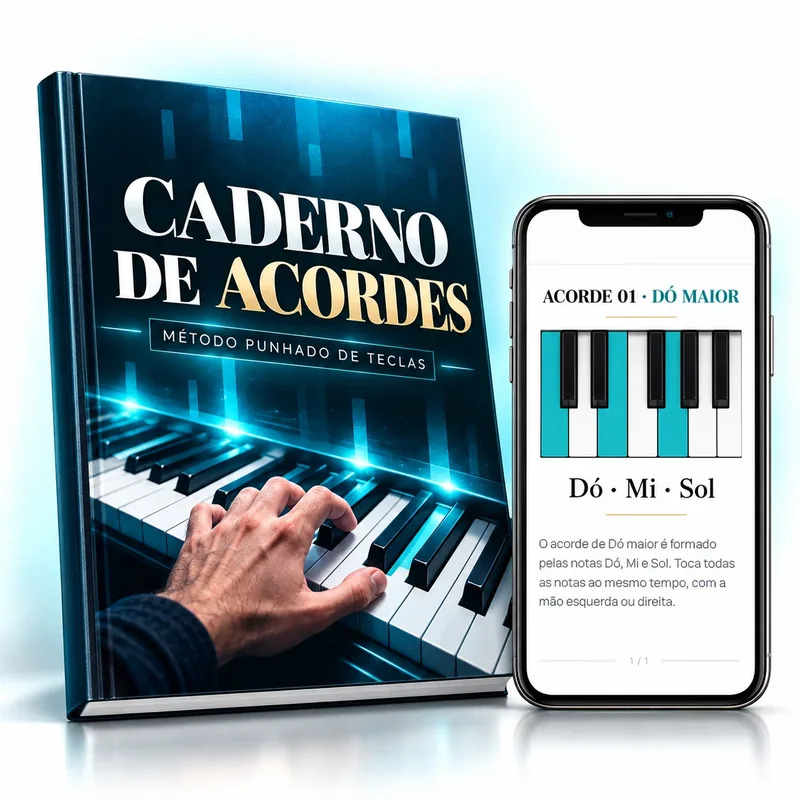
GrátisEsquece-se dos acordes a meio da música? Resolvido!
Com este caderno tem todos os acordes do livro, um por página, com o desenho do teclado e os dedos marcados. Deixa-o aberto ao lado e toca sem ter de decorar nada.
29€ hoje 0€
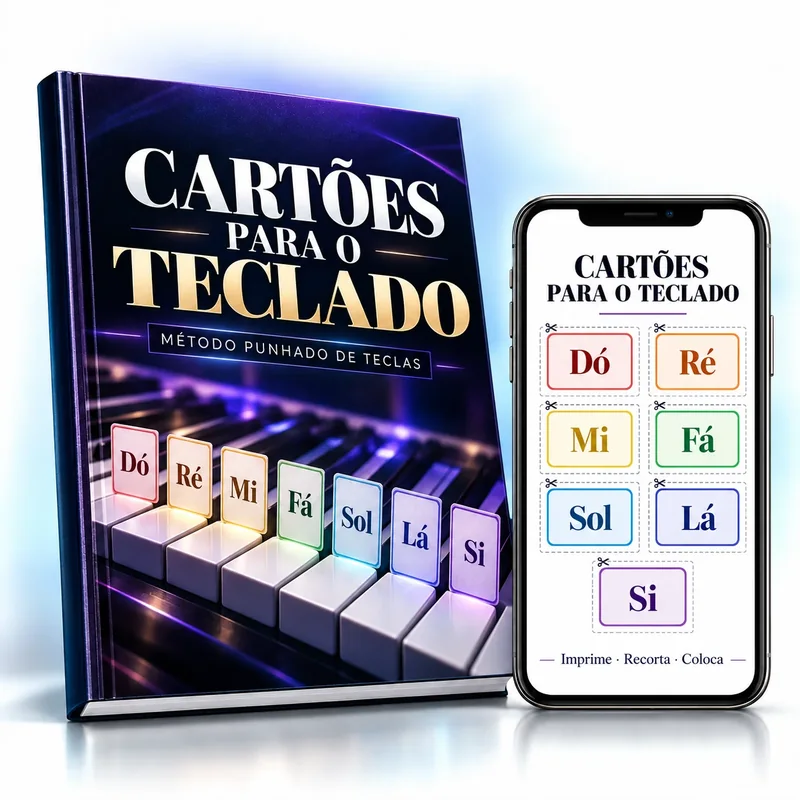
GrátisPerde-se no teclado e anda sempre a contar teclas? Resolvido!
Imprime os cartões, corta e pousa-os em cima das teclas. Nos primeiros dias a mão vai direta ao sítio certo, e depressa deixa de precisar deles.
19€ hoje 0€
Demora semanas a tirar cada música nova? Resolvido!
Em 3 passos, este guia mostra como pegar numa música que nunca tocou e tocá-la do princípio ao fim no mesmo dia: descobrir os acordes, acertar o ritmo e juntar as duas mãos.
29€ hoje 0€
Livro e os três bónus lado a lado, como uma coleção.
| O que leva | Valor |
|---|---|
| Livro Teclado em 21 Dias (PDF) | 47€ |
| Bónus 1 · Caderno de Acordes | 29€ |
| Bónus 2 · Cartões para o Teclado | 19€ |
| Bónus 3 · Como Aprender Uma Música por Dia | 29€ |
| Valor se comprasse à parte | 124€ |
| Hoje | 14,90€ |
Aula particular de piano em Portugal começa nos 23€ à hora. Uma escola de música anda nos 87,80€ por mês. Isto paga-se uma vez.
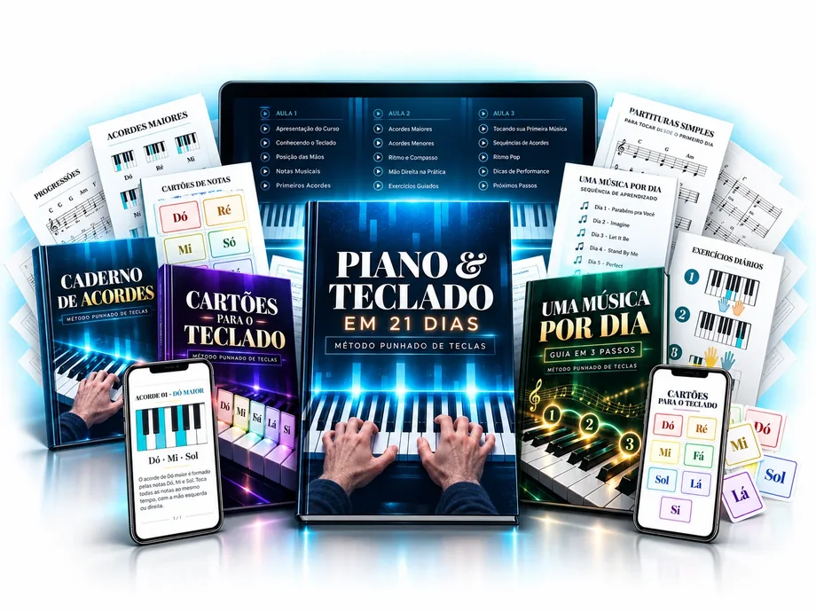
Pagamento único · acesso imediato · 7 dias de garantia
href="#". Troque pelo link do checkout. O order bump e os métodos de pagamento ficam lá dentro.Assim que o pagamento for finalizado, você recebe todos os materiais de imediato, sem ficar à espera.
Compre, receba tudo no email e veja o material por dentro com calma. Faça os primeiros dias. Experimente no seu teclado.
Se ao fim de uma semana achar que não é para si, escreva uma linha para o email de apoio. Devolvo o dinheiro toda a semana, sem discussão e sem lhe pedir explicações.
Em Portugal tem ainda, por lei, 14 dias de direito de livre resolução nas compras online. A minha garantia é o que faço por cima disso.
Faz sentido perguntar: o que é que arrisca? O preço de um almoço, com uma semana para decidir. O que arrisca a sério é deixar o teclado no canto mais um ano.